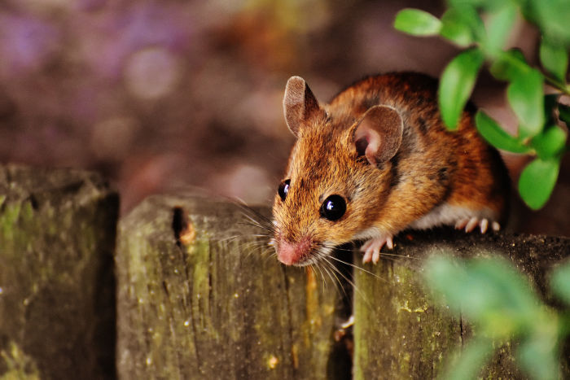
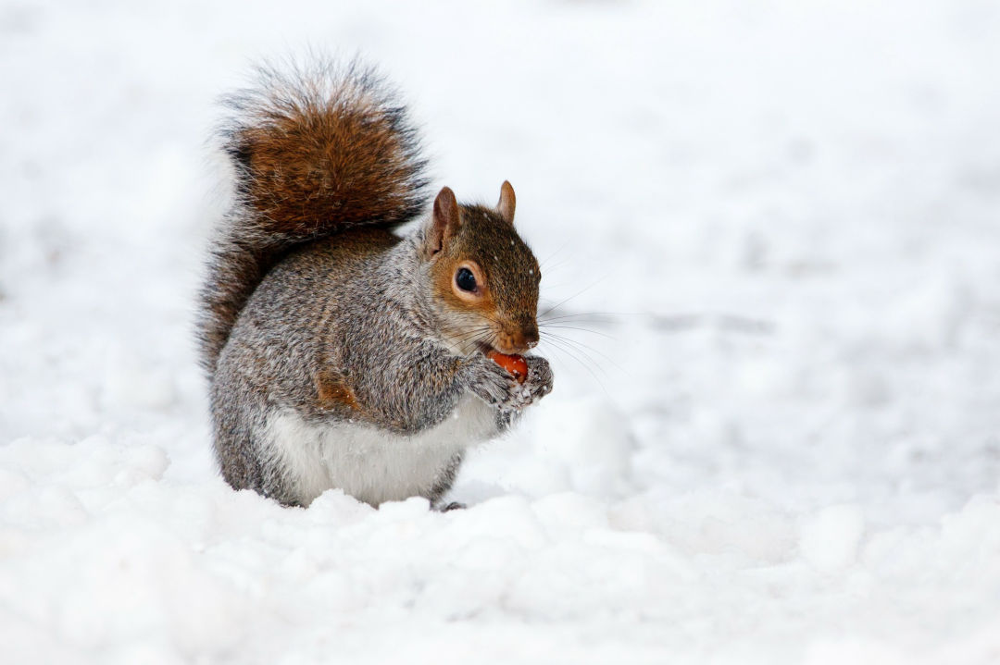
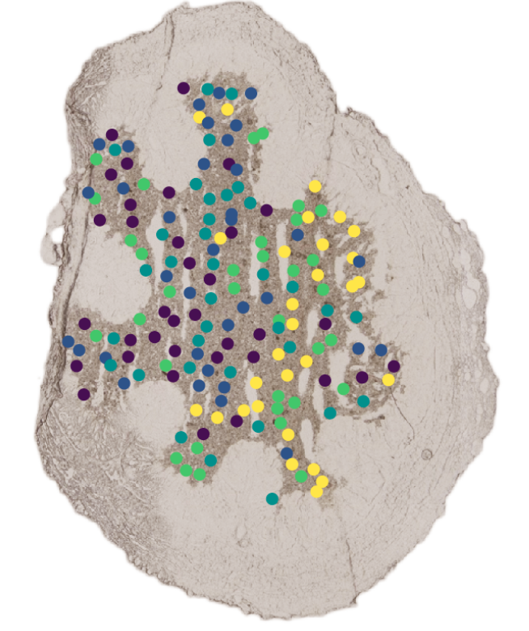
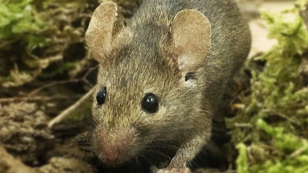

Microbiomes
We investigate how microbial communities vary among animals and environments, and how they contribute to host biology, ecology and evolution.

How we work
We collect animals and environmental samples, run controlled experiments and analyse genomes, metagenomes and other molecular data together.

Organism · community · environment
Research themes
Our projects examine microbiomes, their relationships with animal genomes and the spatial organisation of microbial communities at the smallest scales.
We investigate how microbial communities vary among animals and environments, and how they contribute to host biology, ecology and evolution.

We combine host genomic and microbiome data to understand how animals and their associated microorganisms interact and respond to ecological and evolutionary pressures.

We use spatially resolved molecular approaches to explore how microorganisms are organised and interact within the microscopic landscapes of their hosts.

In the lab now
These projects are being developed by our current group members and collaborators.
Carlotta Pietroni, Amalia Bogri, Jonas Lauritsen
Combining new technologies and equipment to investigate microorganisms in their three-dimensional spatial structures within host–microbiome relationships.
Garazi Martin Bideguren, Ostaizka Aizpurua
Studying the role of gut microbes in lizard adaptation through experiments with wall lizards and faecal microbiota transplants.
Claudia Romeo
Investigating whether the diversity and dynamism of gut microbial communities contribute to the rapid adaptation of invasive species.
Isolde van Riemsdijk
Exploring the relationships among chytrid fungus, a fire-bellied and yellow-bellied toad hybrid zone, and the animals’ microbiomes.
Raphael Eisenhofer
Comparing paired genomic and metagenomic data from ecologically similar marsupial and placental mammals.
Michael Miskelly, Ostaizka Aizpurua
Developing experimental intestinal models that make animal–microbiota interactions observable under controlled conditions.
Garazi Martin Bideguren
Generating paired genomic and metagenomic data across mountain gradients to understand adaptation to different climatic regimes.
Garazi Martin Bideguren
Looking for consistent genomic and gut metagenomic signatures in lizard populations restricted to tiny islets.
Sofia Marcos, Iñaki Odriozola, Jorge Langa
Applying hologenomics to animal production systems and the complex microbial ecology of broiler chickens.
Conservation ecology
Testing whether newt microbiome features correlate with host health and the attributes of restored and newly created ponds.
Comparative multi-omics
Studying the specialised microbiomes and gene expression that help New World vultures thrive on an extreme scavenging diet.
Neotropical vertebrates
Exploring how gut microbiota may facilitate adaptive responses to different degrees of human disturbance in cloud-forest habitats.
How we do the work
We run animal experiments, process large sample collections with automated laboratory workflows and analyse the results on dedicated computing systems.

Captivity experiments reveal interactions between animals and their gut microorganisms under controlled conditions.

Automated tools enable consistent processing of hundreds or thousands of samples per project.

Dedicated life-science computing systems support our most demanding bioinformatic procedures.